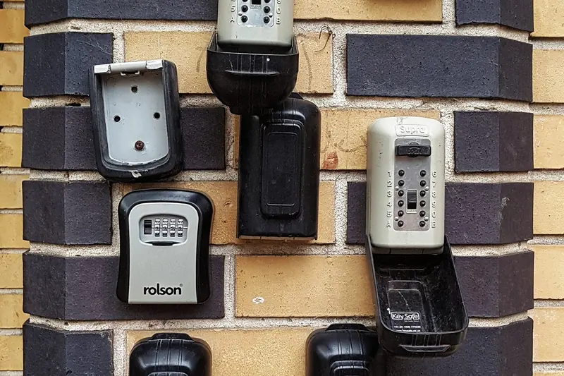

Vermieten · 6 Min. Lesezeit
Self-Check-in in der Ferienwohnung: Schlüsselbox, Smart Lock und Anreise-Nachricht
Mit Self-Check-in kommen Gäste ohne Schlüsselübergabe in die Wohnung, auch um 23 Uhr. Eine Schlüsselbox gibt es ab rund 30 Franken. Ob die Anreise klappt, entscheidet aber meist die Nachricht, die Sie vorher schicken.

Schlüsselboxen mit Zahlencode an einer Hauswand. Im Fach hinter der Klappe liegt der Schlüssel.
- Self-Check-in gehört auf Airbnb weltweit zu den zehn meistgesuchten Ausstattungen (Zahlen 2025).
- Eine Schlüsselbox mit Zahlencode kostet ab rund CHF 30, ein elektronisches Schloss mit Codefeld CHF 238 bis 438 (Beispielpreise November 2026).
- Airbnb zeigt Gästen die genaue Anleitung erst 24 bis 48 Stunden vor der Anreise.
- Die häufigsten Pannen: Box geht nicht auf, Gastgeber nicht erreichbar, Eingang nicht gefunden.
Was Self-Check-in bedeutet
Self-Check-in heisst: Gäste kommen in die Wohnung, ohne dass jemand vor Ort sein muss. Sie reisen an, wann der Zug oder der Flug es erlaubt, und Sie müssen keinen Abend freihalten. Auf Airbnb gehört Self-Check-in weltweit zu den zehn meistgesuchten Ausstattungen (Zahlen 2025). Viele Gäste filtern die Suche danach.
Airbnb zählt vier Wege als Self-Check-in:
- Schlüsselbox: ein kleiner Tresor mit Zahlencode, in dem der Schlüssel liegt
- Tastenfeld: ein elektronisches Schloss, das sich mit einem Code öffnet
- Smart Lock: ein Schloss mit Internetverbindung, das sich per Code oder App öffnet
- Personal im Haus: zum Beispiel eine Rezeption, die rund um die Uhr besetzt ist
Booking.com kennt ähnliche Angaben: Türcode, Schlüsselbox, Rezeption, persönliche Übergabe oder ein vereinbarter Ort für den Schlüssel. Tragen Sie die Art der Anreise auf beiden Plattformen ein, sonst sehen Gäste sie nicht.
Schlüsselbox oder Smart Lock: der Vergleich
| Schlüsselbox | Elektronisches Schloss mit Codefeld | Persönliche Übergabe | |
|---|---|---|---|
| Anschaffung (Beispielpreise November 2026) | ab rund CHF 30 | CHF 238 bis 438 | CHF 0 |
| Eigener Code pro Gast | nur, wenn jemand den Code vor Ort umstellt | ja, aus der Ferne, mit Ablaufdatum | nicht nötig |
| Strom und Verbindung | nicht nötig | Batterien, je nach Modell Internet | nicht nötig |
| Anreise spät am Abend | ja | ja | nur, wenn jemand wartet |
| Typische Pannen | falscher Code, klemmendes Zahlenrad, Schlüssel nicht zurückgelegt, Frost | leere Batterie, Verbindung weg, Code zu spät verschickt | Verspätung des Gastes, niemand erreichbar |
So setzen sich die Beispielpreise zusammen: Eine Schlüsselbox für die Wand mit vierstelligem Zahlencode kostet im Schweizer Onlinehandel CHF 30.50. Ein elektronisches Schloss zum Nachrüsten kostet beim Hersteller je nach Modell CHF 149 bis 349, das Codefeld dazu CHF 89. Zusammen ergibt das CHF 238 bis 438. Die Montage ist nicht eingerechnet.
Als Faustregel: Für eine einzelne Wohnung mit wenigen Wechseln genügt eine gute Schlüsselbox. Bei vielen Wechseln, mehreren Wohnungen oder wenn niemand in der Nähe wohnt, lohnt sich das elektronische Schloss, weil Sie Codes aus der Ferne vergeben und sperren.
Die Schlüsselbox richtig einsetzen
- Montieren Sie die Box fest an der Wand, nicht an einem Geländer oder Rohr, und nicht direkt neben der Wohnungstür mit Namensschild.
- Wählen Sie einen Ort mit Licht. Im Dunkeln lassen sich Zahlenräder kaum ablesen.
- Stellen Sie nach jedem Gast einen neuen Code ein. Vier Stellen ergeben 10'000 mögliche Codes, das Geburtsjahr und 1234 gehören nicht dazu.
- In einem Mehrfamilienhaus sprechen Sie den Ort vorher mit der Hausverwaltung ab.
- In den Bergen: Wählen Sie eine wetterfeste Box an einer geschützten Stelle. Schnee und Eis blockieren Zahlenräder und Klappen.
- Hinterlegen Sie einen zweiten Schlüssel bei einer Person im Ort.
Das elektronische Schloss richtig einsetzen
- Vergeben Sie für jede Buchung einen eigenen Code, der nach der Abreise abläuft. Das gilt für jede Art von Self-Check-in.
- Wechseln Sie die Batterien nach Plan und nicht erst bei der Warnung. Bei einem verbreiteten Modell hält die Batterie des Codefelds bis 18 Monate.
- Prüfen Sie vor dem Kauf, ob das Schloss zu Ihrem Zylinder und zu Ihrer Tür passt.
- Behalten Sie einen Weg ohne Strom: einen normalen Schlüssel in einer Schlüsselbox oder bei einer Person im Ort.
- Bei einer Haustür mit Gegensprechanlage braucht es eine Lösung für beide Türen.
Was bei der Anreise schiefgeht
Eine im Mai 2026 veröffentlichte Auswertung von 37'359 Gästeanfragen an Ferienunterkünfte zeigt: 3'822 davon drehten sich um den Check-in, also rund jede zehnte. Die drei häufigsten Probleme:
- Die Schlüsselbox oder das Schloss geht nicht auf.
- Der Gastgeber ist nicht erreichbar.
- Der Gast findet den Eingang nicht.
Gäste scheitern also selten am Self-Check-in an sich. Sie scheitern an einem falschen Code, an einer ungenauen Beschreibung oder daran, dass es keinen Plan B gibt. Alle drei Punkte lösen Sie mit einer guten Anreise-Nachricht.
Die Anreise-Nachricht: Checkliste
- Check-in-Zeit und was gilt, wenn der Gast früher kommt
- Genaue Adresse mit Kartenlink, dazu Stockwerk und Name an der Klingel
- Foto des Eingangs und der Schlüsselbox, bei Tageslicht aufgenommen
- Schritt für Schritt: Code eingeben, Klappe öffnen, Schlüssel nehmen, Box wieder schliessen
- Parkplatz oder Weg vom Bahnhof, in autofreien Orten wie Wengen und Mürren mit Gehzeit
- WLAN-Name und Passwort
- Telefonnummer für den Notfall und was der Gast tun soll, wenn die Tür nicht aufgeht
Airbnb zeigt die Art der Anreise sofort nach der Buchung, die genaue Anleitung aber erst 24 bis 48 Stunden vor dem Check-in. Bis zur Anreise ist diese Nachricht oft nach unten gerutscht. Schicken Sie darum am Vortag oder am Morgen der Anreise eine eigene, kurze Nachricht. Bei Booking.com lässt sich hinterlegen, wann Sie die Anleitung schicken: sofort, einen Monat vorher, eine Woche vorher oder am Anreisetag.
Vorlage zum Anpassen
Beispiel: «Guten Tag Frau Muster, morgen ist es so weit. Check-in ab 16 Uhr. Adresse: Dorfstrasse 1, 2. Stock, Klingel Alpenblick (Kartenlink). Die Schlüsselbox hängt rechts neben der Haustür, siehe Foto. Code: 4071. Bitte legen Sie den Schlüssel bei der Abreise zurück und verdrehen Sie die Zahlen. WLAN: Alpenblick, Passwort im Wohnzimmer. Geht etwas nicht, erreichen Sie uns unter [Ihre Nummer], auch abends.»
Schreiben Sie die Nachricht in der Sprache des Gastes, mindestens auf Deutsch und Englisch. Speichern Sie sie als Vorlage, dann ist sie mit zwei Klicks verschickt.
Vor dem ersten Gast: einmal selbst anreisen
Bitten Sie eine Person, die die Wohnung nicht kennt, nur mit Ihrer Nachricht hineinzukommen, am besten bei Dunkelheit. Wo sie zögert, fehlt ein Satz oder ein Foto. Was sonst in die Wohnung gehört, steht in der Checkliste zum Einrichten. Und wer nachts ans Telefon geht, wenn der Code nicht stimmt, ist eine der Fragen im Vergleich selbst vermieten oder Verwaltung.
Alpinhost richtet für Ihre Wohnung eine Schlüsselbox oder ein Smart Lock ein, vergibt einen Code pro Gast und schickt die Anreise-Informationen in der Sprache des Gastes. Wohnung prüfen lassen
Häufige Fragen
Was ist Self-Check-in bei Airbnb?
Self-Check-in bedeutet, dass Gäste ohne Gastgeber in die Unterkunft kommen. Airbnb zählt dazu Schlüsselbox, Tastenfeld, Smart Lock und Personal im Haus, das rund um die Uhr erreichbar ist.
Wann erhalten Gäste den Code für die Schlüsselbox?
Airbnb zeigt die Art der Anreise sofort nach der Buchung und die genaue Anleitung 24 bis 48 Stunden vor dem Check-in. Schicken Sie zusätzlich am Vortag oder am Morgen der Anreise eine eigene Nachricht mit Code, Foto und Notfallnummer.
Schlüsselbox oder Smart Lock: Was ist besser?
Eine Schlüsselbox kostet ab rund CHF 30 und braucht keinen Strom, der Code muss aber vor Ort umgestellt werden. Ein elektronisches Schloss mit Codefeld kostet CHF 238 bis 438 (Beispielpreise November 2026) und erlaubt einen eigenen Code pro Gast aus der Ferne. Bei vielen Wechseln oder wenn niemand in der Nähe wohnt, lohnt sich das elektronische Schloss.
Was tun, wenn der Gast nicht in die Wohnung kommt?
Wichtig ist ein Plan B, der in der Anreise-Nachricht steht: eine Telefonnummer, die auch abends erreichbar ist, und ein zweiter Schlüssel bei einer Person im Ort oder in einer zweiten Schlüsselbox.